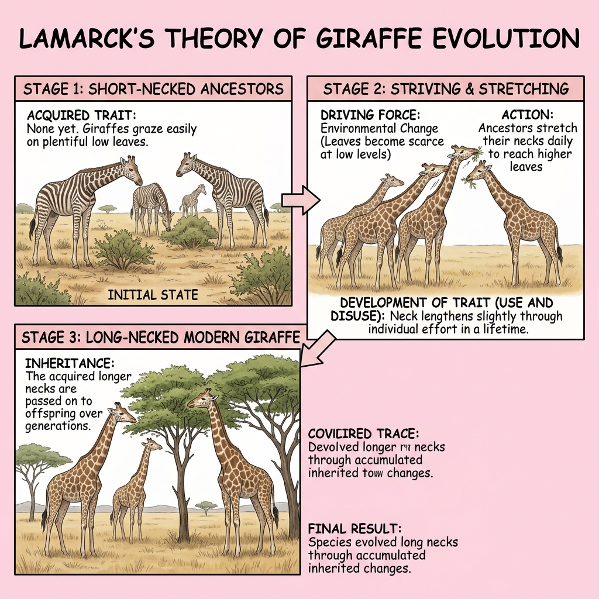
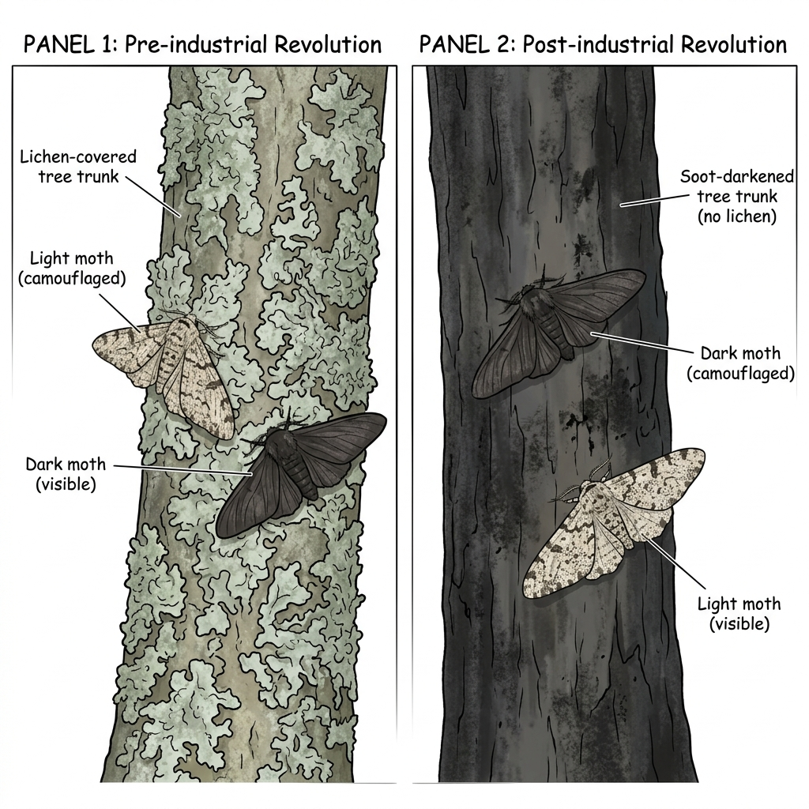
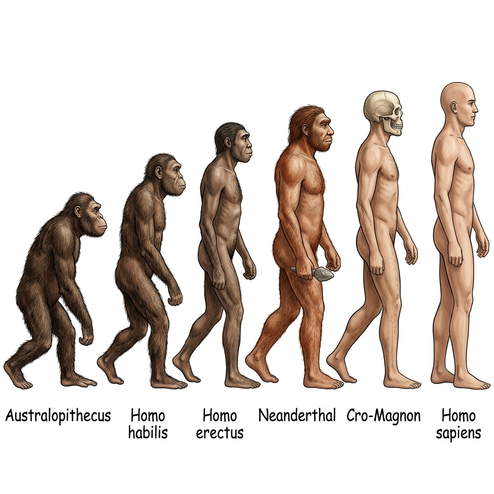

Chapter 16: Human Evolution
1. Introduction to Evolution
Definition of Evolution
Evolution is defined as a slow, gradual, and continuous process of change by which complex forms of life have developed from simpler pre-existing forms over millions of years.
It is the process by which different kinds of living organisms are thought to have developed and diversified from earlier forms during the history of the earth.
The term "Evolution" literally means to unroll or unfold. In biology, organic evolution explains how the present-day diverse life forms on Earth originated from common ancestors.
2. Theories of Evolution
Many scientists proposed theories to explain how evolution occurs. The two most prominent theories in your syllabus are Lamarck's Theory and Darwin's Theory.
A. Lamarck's Theory of Inheritance of Acquired Characters
Proposed by the French biologist Jean-Baptiste Lamarck in 1809 in his book Philosophie Zoologique.
Postulates of Lamarckism
- Use and Disuse of Organs: Parts of the body that are used extensively become larger and stronger, while those that are not used deteriorate and eventually disappear.
- Inheritance of Acquired Characters: Any characteristics (modifications) acquired by an organism during its lifetime due to the use or disuse of organs are transmitted (inherited) to its offspring.
Examples of Lamarck's Theory (ICSE focus)
- Neck of the Giraffe (Use of organ): The ancestors of the giraffe had short necks. To reach leaves on tall trees, they had to constantly stretch their necks. Over generations, this continuous stretching (use) resulted in the long neck of modern giraffes.

Fig 16.1: Lamarck's Theory of Use and Disuse (Giraffe's Neck)
- Vestigial Organs (Disuse of organ): Organs that are present in a reduced form and have no apparent function in the organism. According to Lamarck, these organs lost their function due to disuse over thousands of years.
Examples of Vestigial Organs in Humans:
- Vermiform appendix: A remnant of the caecum (used by herbivorous ancestors to digest cellulose).
- Wisdom teeth: Third molars that were useful for chewing coarse food in the past.
- Pinnae (ear muscles): Muscles to move the external ear, which humans no longer use.
Why Lamarckism failed? August Weismann disproved it by cutting the tails of mice for 21 generations. The 22nd generation still had normal tails! He proved that changes in somatic (body) cells are not inherited; only changes in germ (reproductive) cells are passed on.
B. Darwin's Theory of Natural Selection
Proposed by the British naturalist Charles Darwin. He went on a voyage on the ship HMS Beagle and made extensive observations, especially on the Galapagos Islands. His theory was published in the famous book "Origin of Species" (1859).
Key Postulates of Darwinism
- Overproduction: All organisms have the capacity to produce a large number of offspring (e.g., a salmon produces millions of eggs).
- Struggle for Existence: Since resources (food, space) are limited, there is intense competition among organisms to survive.
- Variations: No two individuals are exactly alike. There are variations among the members of a population.
- Survival of the Fittest (Natural Selection): Nature selects those organisms which are best adapted to the environment. The fittest survive and reproduce, while the unfit perish.
- Origin of Species: The continuous selection of variations over many generations leads to the formation of a completely new species.
Example of Natural Selection (Industrial Melanism)
The Peppered Moth (Biston betularia) in England:
- Before Industrial Revolution: Tree trunks were covered with light-coloured lichens. Light-coloured moths were easily camouflaged, while dark-coloured (melanic) moths were easily spotted and eaten by birds. Hence, light moths survived (nature selected them).
- After Industrial Revolution: Pollution killed the lichens and soot darkened the tree trunks. Now, light-coloured moths were easily visible to predators, while dark-coloured moths were camouflaged. Thus, dark moths survived and their population increased. This is a classic example of Natural Selection in action.

Fig 16.2: Industrial Melanism (Natural Selection in Peppered Moths)
3. Stages of Human Evolution
Human evolution occurred over millions of years. Our ancestors belonged to the order Primates. The evolutionary sequence leading to modern humans is:

Fig 16.3: Stages of Human Evolution
| Stage of Evolution |
Cranial Capacity (Brain Size) |
Key Features / Significance |
1. Australopithecus
(Southern Ape) |
450 - 600 cc |
First ape-man. Existed in Africa. Showed early signs of bipedalism (walking on two legs). Prominent brow ridges, chinless jaw. |
2. Homo habilis
(Handy Man) |
680 - 735 cc |
First true human ancestor to make and use stone tools. Bipedal, but slightly hunched. Meat-eating habit started. |
3. Homo erectus
(Upright Man) |
800 - 1125 cc |
First to walk perfectly upright. First to use fire and travel out of Africa (found in Java and Peking). |
4. Homo neanderthalensis
(Neanderthal Man) |
1300 - 1600 cc |
Lived in caves, used animal hides for clothing. Buried their dead with flowers (cultural beliefs). Stocky and strong body. |
| 5. Cro-Magnon Man |
1450 - 1600 cc |
Direct ancestor of modern man. Made excellent tools and weapons (spears, bows). Known for cave paintings. |
6. Homo sapiens sapiens
(Modern Man) |
1450 - 1500 cc |
Appeared about 25,000 years ago. Advanced language, agriculture, high intelligence, well-developed chin, reduced brow ridges. |
4. Major Evolutionary Changes in Humans
As humans evolved from ape-like ancestors, several major physical changes occurred:
Key Evolutionary Characteristics
- Bipedalism: Walking fully erect on two hind legs. This freed the forelimbs (hands) for grasping, holding objects, and making tools.
- Increase in Cranial Capacity: The brain size increased drastically (from ~450 cc in Australopithecus to ~1450 cc in modern humans), allowing higher intelligence, memory, and speech.
- Reduction in Size of Canine Teeth: As diet changed from tearing raw flesh to eating cooked food, large canine teeth were reduced.
- Flattening of the Face: The protruding snout (prognathous face) reduced, resulting in a flatter face (orthognathous face).
- Changes in Forehead and Brow Ridges: The thick, heavy brow ridges above the eyes flattened out, and the forehead became steep/vertical to accommodate the larger frontal lobe of the brain.
- Development of a Prominent Chin: Modern humans are the only species with a distinctly projecting chin.
- Reduction in Body Hair: Thick body hair reduced significantly as clothing and fire were used for warmth.
- Change in Posture: The spine developed distinct curves (S-shape) to support upright posture, and the pelvis became broader and bowl-shaped.
5. Common ICSE Exam Questions & Tips
🎯 Exam Tips & Frequently Asked Questions
- Vestigial organs: You will almost certainly be asked to name 2-3 vestigial organs in humans (Appendix, Wisdom teeth, Pinna muscles).
- Lamarck vs. Darwin: Know the fundamental difference: Lamarck believed traits acquired during life are passed on. Darwin believed nature selects naturally occurring favourable variations.
- Industrial Melanism: Usually asked as a give-reason question (e.g., "Why did dark moths survive after the industrial revolution?"). Mention "camouflage" and "natural selection by predators."
- Evolutionary sequence: Learn the correct chronological order: Australopithecus → Homo habilis → Homo erectus → Neanderthal → Cro-Magnon → Homo sapiens.
- Specific characteristics: Which ancestor first used fire? (Homo erectus). Which ancestor had maximum cranial capacity? (Neanderthal/Cro-Magnon). Which ancestor first made tools? (Homo habilis).